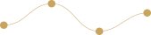

O Algoritmo Premia a Atenção.
Retenção é Engenharia.
Aprenda o método prático que transforma roteiros brutos em máquinas de visualizações qualificadas e clientes de alto ticket.

Sistema Cromático da Atenção
Estrutura cromática pendente do MacBook conforme o template do Figma, adaptada para os 4 tons mestres da identidade Play Viral. Clique em qualquer card para copiar o código hexadecimal.
Clareza editorial sem ofuscamento óptico.
Máxima autoridade e contraste WCAG AAA.
Prestígio sensorial e valor percebido de mentoria.
Atmosfera cinematográfica para inversões.
Arquitetura & Famílias Tipográficas
Substituição do antigo par de fontes pela elegância da Mirante (Display de Alta-Costura), Playfair Display (Capitulares Nobres) e Manrope (Interface & Leitura Óptica).
Mirante
Manrope
Vetores Semióticos Oficiais (Node 20:4)
Os quatro símbolos de ancoragem que constroem a narrativa visual e impedem a evasão de espectadores.
Fio Narrativo
Costura a atenção do espectador do primeiro ao último segundo do vídeo.
Vesica Piscis
Lente de foco onde o roteiro encontra o desejo latente da audiência.

Senoide Contínua
Cadência harmônica que equilibra picos de tensão e alívio narrativo.

Prisma Diamante
Lapidação de ideias brutas em múltiplos ativos de alto ticket.
Página Inteira em Moldura macOS
Renderização interativa e fluida da Landing Page oficial Play Viral dentro da moldura Safari Mac, permitindo navegação ao vivo por todas as seções.
Play Viral • Valéria Mendes
Projeto construído com base em princípios da neurociência da atenção, tipografia suíça e componentes modulares 21st.dev.